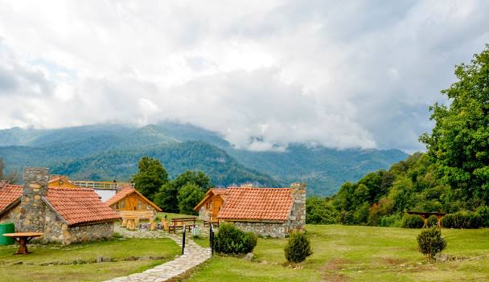
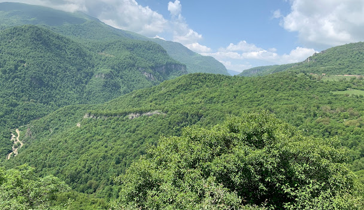

Տավուշ
Տավուշի մարզ, մարզ Հայաստանի հյուսիսարևելյան մասում։ Մարզկենտրոնը Իջևան քաղաքն է։ Բնակչությունը՝ ▼103589 մարդ
Աշխարհագրություն
Տավուշի մարզը գտնվում է Հայաստանի հյուսիսարևելյան հատվածում։ Ընդգրկում է Իջևանի, Տավուշի (նախկինում՝ Շամշադին), Նոյեմբերյանի, Դիլիջանի տարածաշրջանները և 5 քաղաքներ՝ Իջևան, Նոյեմբերյան, Բերդ, Դիլիջան և Այրում։ Մարզը հյուսիսում սահմանակից է Վրաստանին, արևելքում՝ Ադրբեջանին։ Հայաստանի պետական սահմանից մարզին բաժին է ընկնում 400 կմ հատված, որից 352-ը՝ Ադրբեջանի հետ։ Մարզի կենտրոնով դեպի հյուսիս-արևելք հոսում է Աղստև գետը։ Ամենացածր կետը գտնվում է Դեբեդավան գյուղի մոտ (380 մ), ամենաբարձր կետը՝ Միափորի լեռնաշղթայի Մուրղուզ լեռն է (2993 մ)։ Հայաստանի Տավուշի մարզը տարածվում է Փոքր Կովկասի լեռնաշղթաների արտաքին շարի վրա (Վիրահայոց, Գուգարաց և Միափորի լեռներ)։ Գտնվում է Հայաստանի չափավոր խոնավ տարածաշրջանում։ Գետերը պատկանում են Կասպից ծովի (Կուր գետի) ավազանին և սնվում են հալոցքային, ստորերկրյա և անձրևային ջրերից։ Գտնվում է Երևանից 137 կմ հեռավորության վրա
Պատմական ակնարկ
Հայաստանի Ազգային Ժողովի հանրապետության վարչատարածքային բաժանման մասին օրենքով կազմավորվում է Տավուշի մարզը, որը հաստատվում է Հայաստանի նախագահի կողմից 1995 թվականի դեկտեմբերի 5-ին։ Մարզպետարանն իր գործունեությունը սկսել է 1996-ի փետրվարի 20-ին։ Մարզի Տավուշ անունը պայմանական և կամայական է, քանի որ հայոց պատմության մեջ չի եղել նման անունով վարչատարածքային միավոր, որ երբևէ ընդգրկած լիներ ներկայիս մարզի ողջ տարածքը։ Պատմական աշխարհագրությունից հայտնի է, որ Ուրարտու պետության (Արարատյան թագավորություն) ժամանակաշրջանում (մ․թ․ա․ IX-VI դդ․) երկրի հյուսիս-արևելքը, մինչև Կուր գետը զբաղեցրել է Եթիունէ կամ Ուտիք նահանգը,որը նաև ընդգրկել է ներկայիս ողջ Տավուշի մարզը։ Պատմահայր Մովսես Խորենացու հաղորդմամբ և Աշխարհացոյց-ի տվյալների համաձայն, արդեն Արտաշեսյանների թագավորության ժամանակաշրջանում (մ․թ․ա II- մ․թ․ I դդ․) Տիգրան Բ-ի ստեղծած թագավորության մեջ են մտել մարզի կենտրոնական և արևմտյան հատվածները[1]։ Դիլիջանն իր շրջակայքով մտել է Այրարատ աշխարհի Վարաժնունիք գավառի մեջ, իսկ մարզի արևելյան հատվածը՝ Ուտիք նահանգի մեջ՝ կոչվելով Տուսքուստակ գավառ, որը նշանակում է Տուսի գավառ։ Տավուշ անվան ստուգաբանությունը հենց կապվում է այս Տուս անվան հետ, որի մասին հիշատակություններ են պահպանվել պատմիչներ Մովսես Խորենացու, Հովհաննես Դրասխանակերտցու աշխատությունների մեջ։ 1990 թվականի նոյեմբերի 11-ին նախ Տավուշի շրջան կոչվեց 16-րդ դարից Շամշադին անվանվող շրջանը, իսկ Հայաստանի վարչատարածքային վերջին բաժանումից հետո՝ նորաստեղծ մարզը։
 